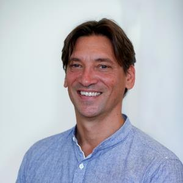
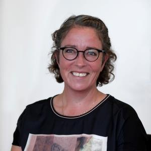
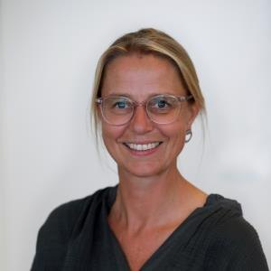
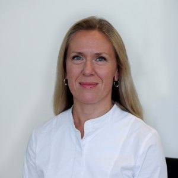
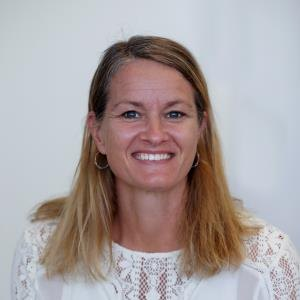
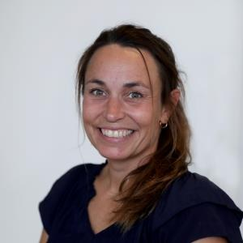
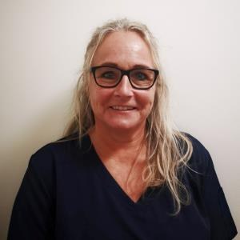

Mød holdet bag huset
Syv faste læger, konsultationssygeplejersker, bioanalytiker, lægesekretærer og praksismanager — vi arbejder tæt sammen om din behandling.
Vores syv faste læger
Alle vores læger er speciallæger i almen medicin. Du er tilmeldt huset — men vi tilstræber, at du så vidt muligt ser den samme læge.

Tine Friis Andersen
Uddannet læge i 1991 · i klinikken siden 2002.
Troels Arent Olesen
Uddannet læge i 2001 · i klinikken siden 2007.

Norman Visby
Uddannet læge i 1999 · i klinikken siden 2009.

Jette Mikkelsen
Uddannet læge i 2002 · i klinikken siden 2011.

Anne Silkjær Møller
Uddannet læge i 2003 · i klinikken siden 2012.

Alena Litskalava Jensen
Uddannet læge i 2006 · i klinikken siden 2013.

Maiken Møller Aasted
Uddannet læge i 2006 · i klinikken siden 2013.
Konsultationssygeplejersker
Sygeplejerskerne varetager blandt andet årskontroller af kroniske sygdomme — fx blodtryk og hjerte, KOL, stofskifte (myksødem), knogleskørhed og diabetes — samt en lang række selvstændige konsultationer.

Dorte Ligaard
Lone Rothausen

Susanne Harrild Møller
Resten af holdet
Lægesekretærerne
Anette, Heidi og resten af sekretærteamet er dem, du møder i telefonen og ved skranken. De hjælper med tider, prøvesvar, attester og alt det praktiske.
Bioanalytiker & laboratorium
Vores laboratoriepersonale tager blodprøver og EKG i huset — med faste tider, så du undgår unødig ventetid.
Praksismanager & uddannelse
Vores praksismanager holder styr på husets drift. Derudover hjælper lægestuderende til i telefonen og i klinikken som led i deres uddannelse.